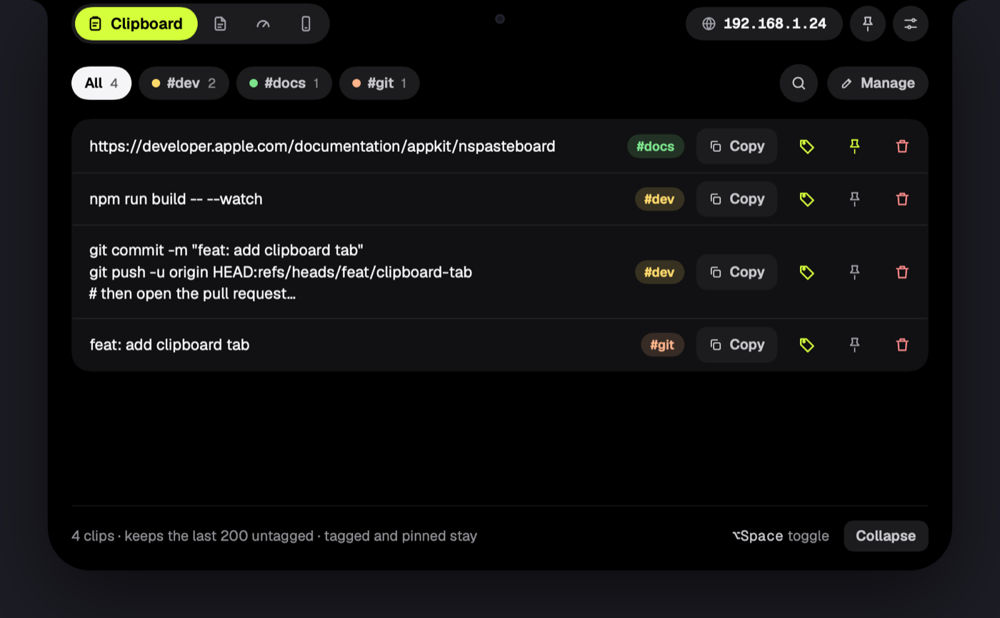
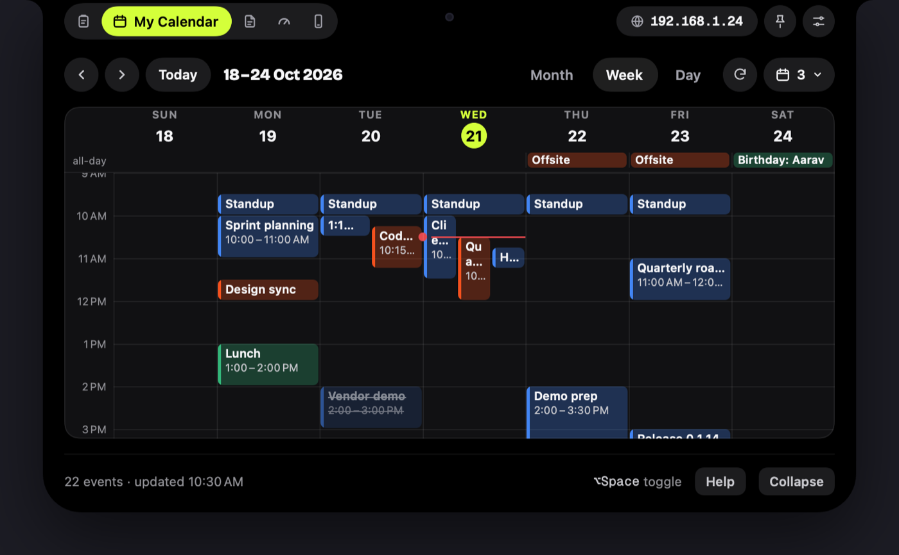
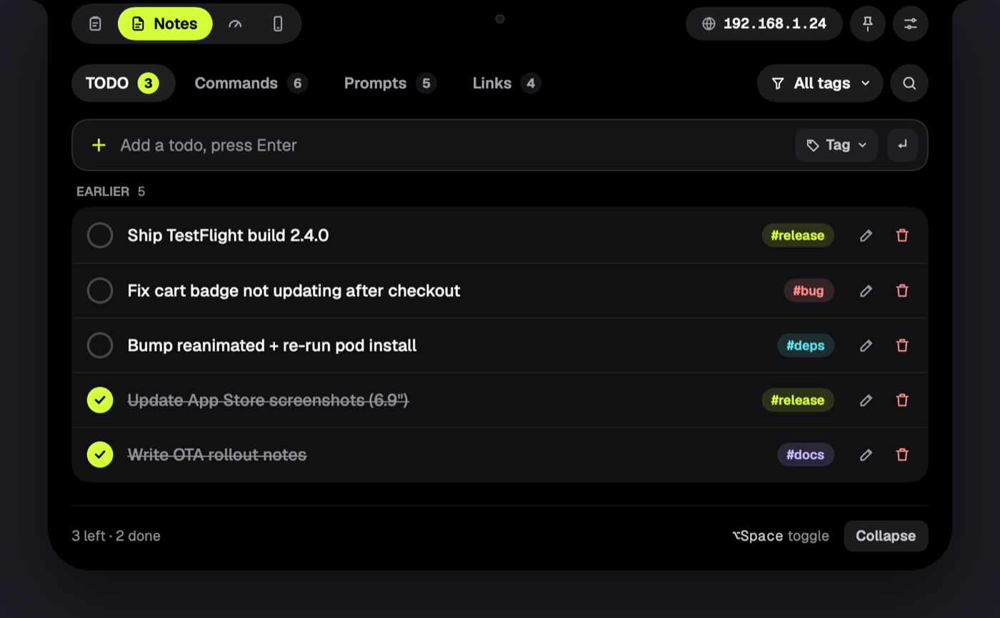
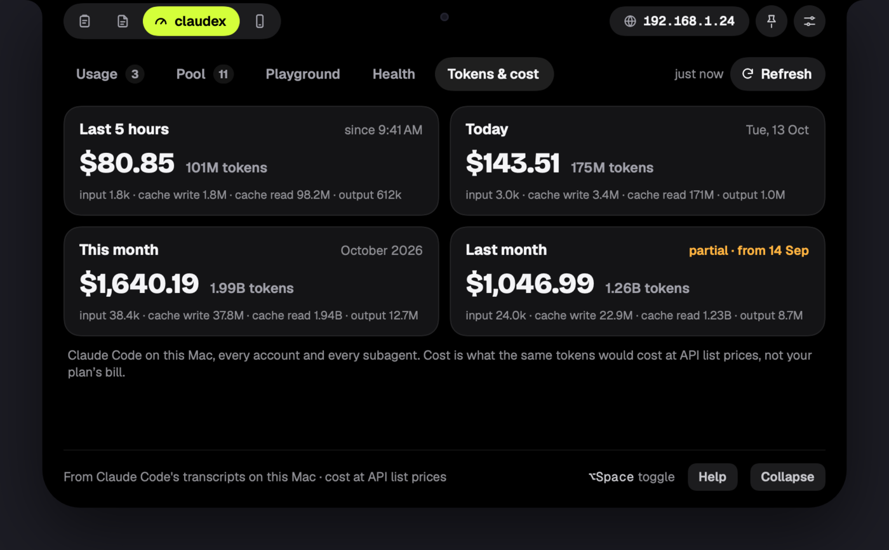
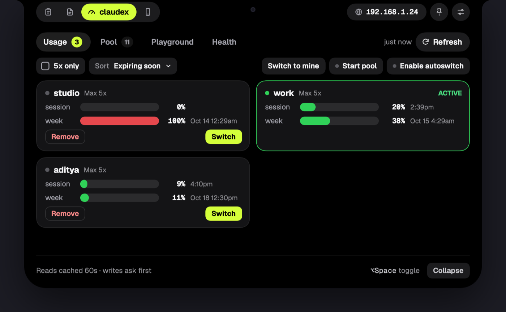
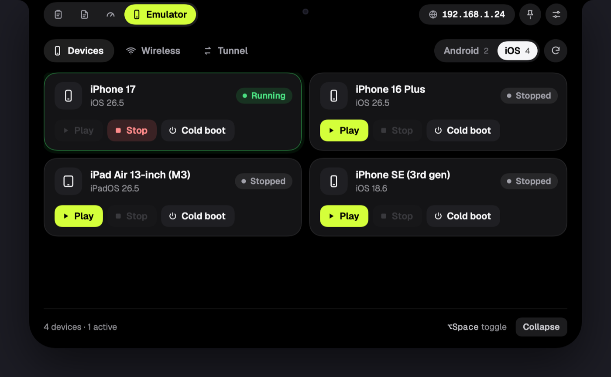
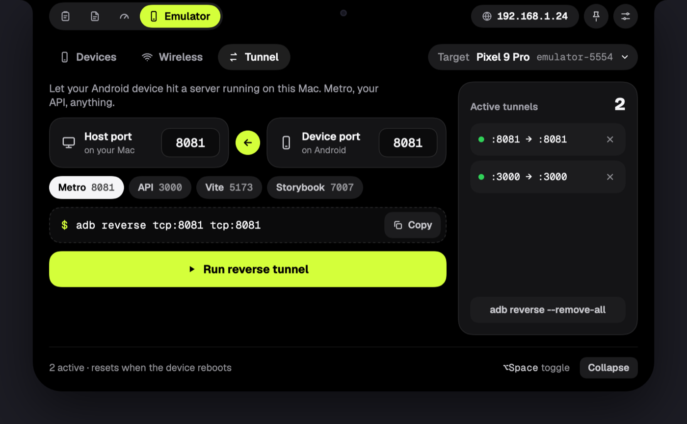
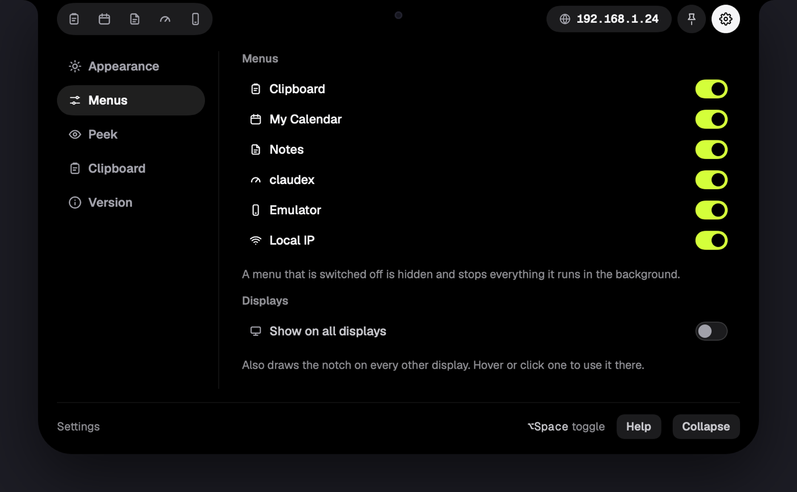
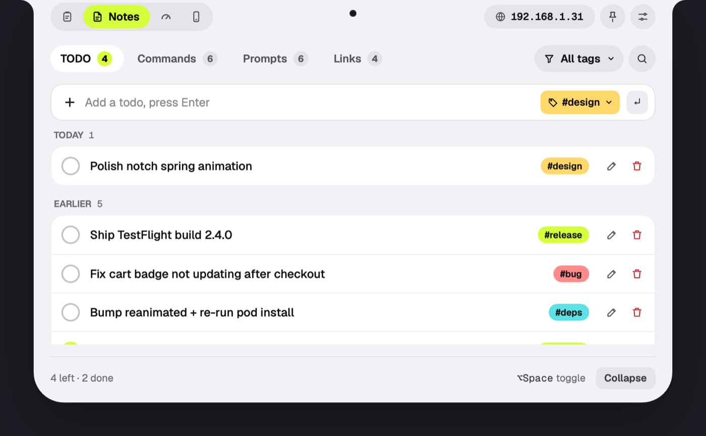

Features
Five menus, a header chip and a settings page. Each menu can be switched off if you do not need it.
Jump to: Clipboard · My Calendar · Notes · claudex · Emulator · Header · Settings · Your data
Clipboard
A searchable history of text you copy. Open it with ⌘ ⇧ V.

- Text only, newest first. Copy the same text again and it moves to the top.
- Tags: give a clip one tag with a colour. Tag chips above the list filter it, and Manage lets you rename, recolour, merge or delete tags.
- Pin a clip to keep it at the top. Pinned and tagged clips are never dropped.
- Search with ⌘ F or the magnifier.
- Copy back with the Copy button or a double-click.
- Privacy: copies from password managers (1Password, Bitwarden, Apple Passwords, Keychain Access, KeePassXC) and anything an app marks secret are never recorded. Clips longer than 50,000 characters are ignored.
- Limit: keeps the last 200 untagged clips by default. Change it in Settings › Clipboard (1 to 1000).
My Calendar
Your Google Calendar in the panel, read-only. Open it with ⌘ ⇧ M. Sign in with Google once with your devxlabs.ai account: the browser opens, you approve read-only access to your calendars, and the panel comes back on this tab. Other kinds of Google account are not accepted.

- Month, Week and Day like Google Calendar. ⇧ Tab cycles them, the arrows step back and forward, Today jumps to now, and the last view you used is remembered. Click a day in Month to open it.
- Events sit in their time slot, side by side when they overlap, with a red line for now. All-day events go in a row above the grid. A multi-day event shows on each of its days. Events you declined are struck through.
- Click an event for the same details Google shows: when, how often it repeats, a Join with Google Meet button (and a copy button) with the dial-in number, the location (opens in Maps), the guests and who has said yes, no or maybe, reminders, the calendar it is on, the description and attachments. Open in Google Calendar takes you to the full event. Esc closes the sheet.
- Calendars: the calendar button in the header lists every calendar on the account. Tick the ones to show. Your choice is remembered.
- Sign out is in the same menu. If Google ever stops accepting the saved sign-in, the tab asks you to sign in again.
- In the peek: switch on Settings › Peek › Today’s events and hovering the notch also lists what is left of your day, such as “Client call · now” and “Hotfix triage · in 15 min”. Click one to jump to it in the grid with its details open. Timed events only; ones you declined are left out.
- Read-only: you cannot create, edit or answer invitations here. Use Google Calendar for that.
Notes
Four sub-tabs: TODO, Commands, Prompts and Links. Open TODO with ⌘ ⇧ T, Commands with ⌘ ⇧ C, Prompts with ⌘ ⇧ P, Links with ⌘ ⇧ L.

TODO
- Type a task and press Enter. Write
#bug(or any tag) in the text to tag it as you type. - Tap the circle to tick a task off. The pencil edits it inline, the bin deletes it.
- Undo: a deleted task can be restored from the Undo button in the footer.
- Tasks are grouped by day (Today, Yesterday, then dates). Filter by tag from the All tags menu, or search.
- Tags have a name and colour. Names are lowercase letters, digits,
_and-, up to 20 characters.
Commands
One-line shell commands you keep reusing, shown in a monospace font. Add, copy, edit, delete.
Prompts
Longer, multi-line text such as AI prompts or canned replies. ⇧ Enter inserts a new line, Enter saves. Each row previews up to three lines. Searchable.
Links
Paste a URL and press Enter. Open launches it in your default browser, Copy copies it. Searchable.
In Commands, Prompts and Links, a double-click copies the item.
Claude
Claude Code’s own tools in one menu, before claudex. None of it needs the claudex CLI. Each tab has its own switch in Settings › Menus.
- Agents: approvals and questions waiting for you, and your live Claude Code sessions, with a message box for each. The tab shows how many are waiting, and when a new one arrives while you are on another Claude tab the panel moves to Agents.
- Sessions: a board of your Claude Code sessions from the last 30 days, grouped in columns you drag between. Resume or copy the resume command; Show on board in Agents jumps to a session here.
- Tokens & cost: what Claude Code used on this Mac, in four cards: the last 5 hours (rolling), today, this month and last month. Each shows the tokens (all kinds, cache reads included) and what they would cost at API list prices. That is an estimate, not your plan’s bill. It reads Claude Code’s own transcripts in
~/.claude/projects(every account and subagent). The first look takes a few seconds, then it updates every minute while the tab is open. - Claude Code deletes a transcript 30 days after its last write, so MyWorkDock keeps daily totals of its own from the first time it looks (it also looks each time the app starts, once you have opened the tab). A month that began before that, or that includes a stretch of more than 30 days in which MyWorkDock did not look, is marked partial, with the day from which its numbers are complete.

claudex
A front-end for the claudex command-line tool, which manages several Claude accounts. It needs claudex installed and on your PATH; without it the menu shows a “claudex is not available” note with the reason and a Retry button. Open it with ⌘ ⇧ X.

- Usage: session and weekly gauges for each saved account. Filter to “5x only”, sort by reset time, Switch to an account, or Switch to mine.
- Pool: accounts pooled behind one auto-failover proxy. Allow or deny members, switch, view details, start or stop the pool, and enable autoswitch.
- Playground: run claudex commands (usage, list, current account, doctor and more) and see the output.
- Health: claudex doctor results: what is on, wired or failing.
- The hover peek shows the 5-hour and weekly rings for the active account when you switch it on in Settings › Peek. It then takes the whole peek.
- Results are cached for 60 seconds (use Refresh). Any change, such as switching or removing an account, asks you to confirm first. If claudex output looks unfamiliar the tab shows the raw text with a ⚠ instead of guessing.
Emulator
Control iOS simulators and Android emulators without opening Xcode or Android Studio. Open it with ⌘ ⇧ E. iOS needs Xcode; Android needs the Android SDK (adb and emulator). MyWorkDock looks in the usual places (such as ~/Library/Android/sdk and Homebrew) before falling back to your shell.

Devices
Switch between Android and iOS. Devices appear as cards, two across and three on a large panel. Each card shows its state and has Play, Stop and Cold boot. The list refreshes every 30 seconds, and every 2 seconds while something boots. While a device boots, the notch shows a live activity bar.
Wireless
Paired devices are cards too, each with a status and a Connect, Disconnect or Retry button.
- Android: pair with the IP:port and 6-digit code from the phone, then connect or disconnect. Restart adb server fixes most stuck connections.
- iOS: lists paired devices. It cannot connect or disconnect them; a short “Go cable-free” card walks through the three setup steps.
Tunnel

Builds adb reverse tunnels so an Android device can reach a server running on your Mac. Pick a preset (Metro 8081, API 3000, Vite 5173, Storybook 7007) or type ports, review the command, and press Run reverse tunnel. Active tunnels are listed and removable.
Anything that changes state (stop, cold boot, disconnect, pair, remove tunnel, restart adb) shows a confirmation with the exact command first. Play, Connect and Run tunnel go straight through.
Header: local IP, pin, settings
- Local IP chip: your Mac’s LAN address. Click it to refresh and copy it to the clipboard. Handy for pointing a phone at your dev server.
- Pin: keeps the panel open.
- Settings: the gear icon. It opens a screen in place of the menu, with the pages listed on the left and the chosen page on the right. Click the gear again, or any menu tab, to go back.
Settings

| Page | What you can change |
|---|---|
| Appearance | Theme: System, Dark or Light. Tint: lime (default), blue, purple, pink, orange, yellow, green or teal. Panel size: Medium, or Large (three quarters of the display). |
| Menus | Switch Clipboard, My Calendar, Notes, Claude, claudex, Emulator and Local IP on or off. A menu that is off is hidden and stops everything it runs in the background (My Calendar stops talking to Google). Under Notes, Claude, claudex and Emulator, each tab (TODO, Commands, Prompts, Links; Agents, Sessions, Tokens & cost; Usage, Pool, Playground, Health; Devices, Wireless, Tunnel) has its own switch, so you can hide the ones you never use; at least one tab always stays. Also Show on all displays. |
| Peek | What hover shows. claudex usage is off by default; switching it on takes the whole hover and switches the rest off. Otherwise the TODO counts (not done, done) and clipboard counts (total, pinned) show left of the notch and the local IP on its right. Anything with nothing to show is hidden, and each needs its menu on (the TODO count also needs Notes › TODO). Today’s events (off by default) add a row under whichever is showing, claudex included: the next three events today that are not over yet, with how long until each starts. Click an event to open it in My Calendar, scrolled to it with its details open; click elsewhere on the row to open My Calendar on today. It needs My Calendar signed in, and it asks Google only when you hover (at most once a minute). |
| Clipboard | How many untagged clips to keep (1 to 1000, default 200). Lowering it deletes the oldest ones, so it asks first. |
| Version | Current version, when it last updated, and Check for updates. |

Your data
Everything is stored locally. See where your data lives. Calendar events come straight from Google and are kept in memory only, for a minute at a time: nothing from your calendar is written to disk. Only the Google sign-in itself is saved, in a private file, until you sign out.